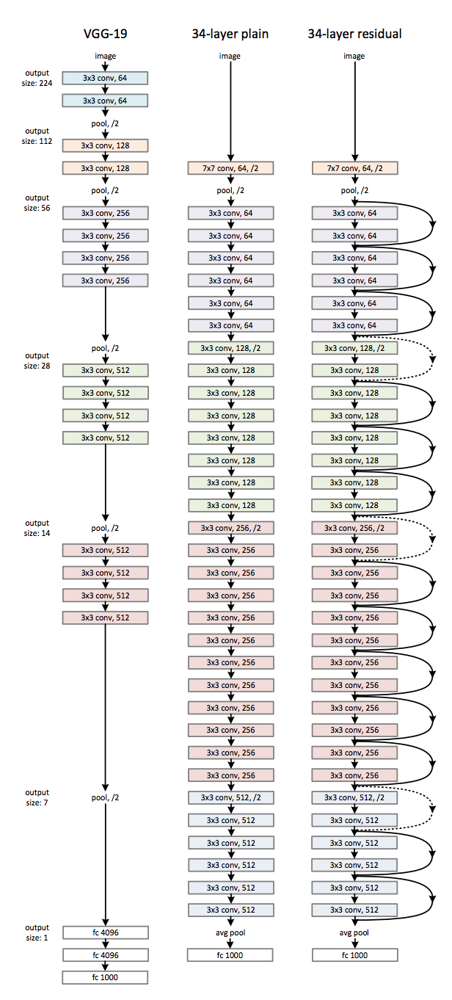
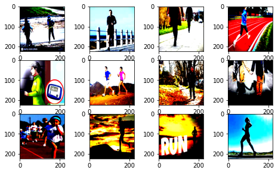
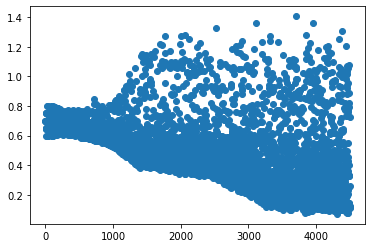
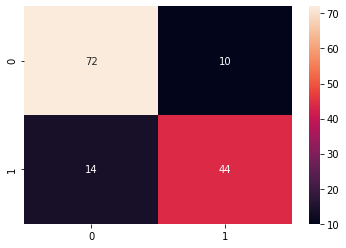
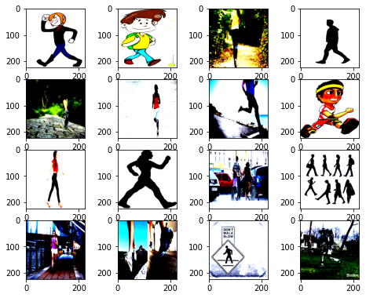

Using Pretrained ResNets with PyTorch

Resnets are very powerful tools we can use to do image classification.
In this article we will try to understand:
- What are ResNets and how are they so effective?
- How to use them with PyTorch We will be using this dataset data
Deep Residual Learning(ResNets) are used for Image Recognition.They were first discussed in the paper. ResNet is an architecture of Artificial Neural Network that uses Residual Block to train very deep neural networks. To understand what is a Residual Block and why is it necessary to build deep neural networks with many layers.We first have to understand why training NN’s with many layers is difficult and how resnets are able to solve that problem.
The problem with training deep neural networks
Vanishing/Exploding Gradients they are one of the main reason why it is very difficult to train deep NNs. When we are trying to train a neural network with many layer the gradient starts to approach very small value it is not an inherent problem of ANN’s it is just a problem of gradient based optimization techniques. When we try to make a neural network deep it’s loss and accuracy saturates after a certain number of layers that should not happen. The accuracy should be greater or at least equal to the networks less deep counter parts. Gradients are found through Backpropagation by finding out the derivatives,as the number of layer increases by the chain rule the derivatives are multiplied.If a value is already small it becomes smaller and smaller as we multiply is with more small values.
1
example if we multiply two samll numbers 0.1*0.1=0.01 we get a smaller number.
When we try to update our values the gradient is so small that our original parameters W and b very slightly change. This causes our learning to stop and our accuracy is also saturated.The author of the original paper say that normalization and regularization helps in gradient vanishing but still larger neural networks are not able to generate more accuracy that their less deep counterparts.
How does ResNet solve the gradient problem
ResNet solves the problem of vanishing/exploding gradient by using something called as a Residual Block.

The main idea of ResNet is that we are using an identity layer that simply copies or adds the output of previous layers to the next layers. This prevents the problem of vanishing gradient by adding a residual or identity connection.
F(x) = H(x) + x
The layer is at-least able to learn to form an identity mapping and passing the outputs of previous layers forward.The idea behind stacking identity layer is that the performance of neural network does not go down as we increase the number of layers thus retaining at least the same accuracy as their shallow counterparts.There is no requirement of adding extra parameters by simply adding the identity we can expect good results.

We can see here that resnet is made up of convolution blocks and identity blocks.
Using pretrained ResNet with PyTorch
If we don’t have much data we can use already trained NN’s and finetune them according to our task.This does not take much time and resources and it is also very easy to use.
Code
Importing all the necessary libraries. Our Resnet is sotred in torchvision.model
1
2
3
4
5
6
7
8
import torch
import matplotlib.pyplot as plt
import torch.nn as nn
import torch.optim as optim
import numpy as np
import torchvision
from torchvision import datasets, models, transforms
import torch.utils.data as data
If you are using colab then upload the zip file then unzip it. In colab if you have to run a command use “!” in front of it
1
!unzip /content/walk_or_run.zip
1
2
3
4
Archive: /content/walk_or_run.zip
inflating: walk_or_run_test/test/run/run_0794de59.png
inflating: walk_or_run_test/test/run/run_0987572f.png
----
Our paths for train and test data directories
1
2
train_dir = '/content/walk_or_run_train/train/'
test_dir = '/content/walk_or_run_test/test/'
Here we do some image preprocessing.We first normalize our data and then apply a transformation which crops the centre of the image.
1
2
3
4
5
6
7
normalize = transforms.Normalize(
mean=[0.485, 0.456, 0.406],
std=[0.229, 0.224, 0.225]
)
ds_trans = transforms.Compose([transforms.Resize(224),
transforms.ToTensor(),
normalize])
Making our train and test data loader. We just have to give the directory path to the torchivision ImageFolder it automatically labels the data and also applies tranformation and normalizes the data.
We give transform we defined earlier as an input. The drop_last = True drops the last image data that does not fit in our image size.
For example: If our total data is 100 images and our batch size is 32.Then our total batches will be 100//32 i.e 100 = 32*3 +4. Here last four images will be dropped
1
2
3
4
train_data = torchvision.datasets.ImageFolder(root=train_dir, transform=ds_trans)#giving our transformation as input with image data
train_data_loader = data.DataLoader(train_data, batch_size=4, shuffle=True,drop_last=True)#drop last drops the last images which does not fit in our batch size
test_data = torchvision.datasets.ImageFolder(root=test_dir, transform=ds_trans)
test_data_loader = data.DataLoader(test_data, batch_size=4, shuffle=True,drop_last=True)
Lets check how is our data
1
2
3
4
5
6
7
8
9
10
11
12
13
14
w=10
h=10
fig=plt.figure(figsize=(8, 8))
columns = 4
rows = 5
count=0
for i,l in iter(train_data_loader):
if count>11:
break
count+=1
img = np.transpose(i[0].numpy(), (1, 2, 0))
fig.add_subplot(rows, columns,count)
plt.imshow(img)
plt.show(block=True)

We can see that the input images are not quite homogenous they are very different from each other.Some also have text in them.Some are just animated images of a cartoon runnning,still our model will performe good on this data.
We define our resnet model here
- We make an instance of resnet50 i.e resnet with 50 layers and we put pretrained = True which takes the parameters of already pretrianed resnet.
- Here we are not trying to train the original resnet model. We will only train the last layer which we are adding.
- We add the last layer that has 2 output neurons.
- nn.Sequential let’s us add a sequence of multiple layers which will execute one after another.
- Then we use cuda() for faster GPU computing
Freezing the parameters of resnet50 because we only want to train the last layer.We set requires_grad = False in this way the parameters of resnet50 will not change only the last resnet.fc layer will update their paramters. We only have to fintune our network
1
2
3
4
5
6
7
8
9
10
11
12
13
14
15
16
17
18
19
20
21
22
23
24
25
26
27
28
resnet = models.resnet50(pretrained=True)
# freeze all model parameters
for param in resnet.parameters():
param.requires_grad = False
# new final layer with 16 classes
resnet.fc = nn.Sequential(
nn.Linear(2048,1024),
nn.ReLU(),
nn.BatchNorm1d(1024),
nn.Linear(1024,512),
nn.ReLU(),
nn.BatchNorm1d(512),
nn.Linear(512,128),
nn.ReLU(),
nn.BatchNorm1d(128),
nn.Linear(128,64),
nn.ReLU(),
nn.Linear(64,32),
nn.ReLU(),
nn.Linear(32,16),
nn.ReLU(),
nn.Linear(16,4),
nn.ReLU(),
nn.Linear(4,2),
nn.ReLU()
)
resnet = resnet.cuda()
Checking which layers of our model are to be trained. Which layers are supposed to update their parameters.
1
2
3
4
5
6
7
8
9
10
11
12
13
feature_extract = True
#params_to_update = resnet.parameters()
print("Params to learn:")
if feature_extract:
params_to_update = []
for name,param in resnet.named_parameters():
if param.requires_grad == True:#
params_to_update.append(param)
print("\t",name)
else:
for name,param in resnet.named_parameters():
if param.requires_grad == True:
print("\t",name)
1
2
3
4
5
6
7
8
9
10
11
12
13
14
15
16
17
18
19
20
21
22
23
Params to learn:
fc.0.weight
fc.0.bias
fc.2.weight
fc.2.bias
fc.3.weight
fc.3.bias
fc.5.weight
fc.5.bias
fc.6.weight
fc.6.bias
fc.8.weight
fc.8.bias
fc.9.weight
fc.9.bias
fc.11.weight
fc.11.bias
fc.13.weight
fc.13.bias
fc.15.weight
fc.15.bias
fc.17.weight
fc.17.bias
Defining our loss function and optimizer
1
2
criterion = nn.CrossEntropyLoss()
optimizer = optim.Adam(params_to_update,lr=0.00008)
Training loop
1
2
3
4
5
6
7
8
9
10
11
12
13
14
15
16
17
18
19
20
21
22
23
24
25
26
27
28
29
30
ll = []
resnet.train()
num_epoch = 30
for epoch in range(0,num_epoch):
running_loss = 0.0
running_corrects = 0.0
c = 0
avg_acc=[]
for images,labels in train_data_loader:
inputs = images.cuda() #input image
#labels = labels.reshape(-1,1)
labels=labels.cuda() # target label
#print(labels)
c+=len(labels)
optimizer.zero_grad()
outputs = resnet(inputs) # model takes image as input and predicts an output
loss = criterion(outputs,labels) # calculate loss
_, preds = torch.max(outputs, 1) # predictions
loss.backward() #backprop
optimizer.step()#optimizer steps
ll.append(loss.item())
running_loss += loss.item()
# accuracy checking and loss printing
a = torch.sum(preds == labels.squeeze().data).item()
running_corrects += torch.sum(preds == labels.squeeze().data).item()
avg_acc.append((a/len(labels))*100)
epoch_loss = running_loss/len(train_data_loader)
epoch_acc = running_corrects/c
print('{}/{} number of examples {} Average Acc {:.2f}'.format(epoch+1,num_epoch,c,(sum(avg_acc)/len(avg_acc))))
print('{} Loss: {:.4f} Acc: {:.4f} Current Loss {:.3f}'.format("train", epoch_loss, epoch_acc,loss.item()))
1
2
3
4
5
6
7
8
9
10
11
12
13
14
15
16
17
18
19
20
21
22
23
24
25
26
27
28
29
30
31
32
33
34
35
36
37
38
39
40
41
42
43
44
45
46
47
48
49
50
51
52
53
54
55
56
57
58
59
60
1/30 number of examples 600 Average Acc 49.83
train Loss: 0.6969 Acc: 0.4983 Current Loss 0.746
2/30 number of examples 600 Average Acc 51.33
train Loss: 0.6839 Acc: 0.5133 Current Loss 0.648
3/30 number of examples 600 Average Acc 68.83
train Loss: 0.6637 Acc: 0.6883 Current Loss 0.619
4/30 number of examples 600 Average Acc 75.33
train Loss: 0.6446 Acc: 0.7533 Current Loss 0.631
5/30 number of examples 600 Average Acc 78.67
train Loss: 0.6328 Acc: 0.7867 Current Loss 0.648
6/30 number of examples 600 Average Acc 76.83
train Loss: 0.6270 Acc: 0.7683 Current Loss 0.595
7/30 number of examples 600 Average Acc 75.83
train Loss: 0.6133 Acc: 0.7583 Current Loss 0.582
8/30 number of examples 600 Average Acc 79.67
train Loss: 0.5824 Acc: 0.7967 Current Loss 0.492
9/30 number of examples 600 Average Acc 80.00
train Loss: 0.5502 Acc: 0.8000 Current Loss 0.602
10/30 number of examples 600 Average Acc 77.00
train Loss: 0.5640 Acc: 0.7700 Current Loss 0.520
11/30 number of examples 600 Average Acc 79.17
train Loss: 0.5534 Acc: 0.7917 Current Loss 0.462
12/30 number of examples 600 Average Acc 80.33
train Loss: 0.5449 Acc: 0.8033 Current Loss 0.459
13/30 number of examples 600 Average Acc 81.50
train Loss: 0.5227 Acc: 0.8150 Current Loss 0.372
14/30 number of examples 600 Average Acc 78.33
train Loss: 0.5413 Acc: 0.7833 Current Loss 0.852
15/30 number of examples 600 Average Acc 79.33
train Loss: 0.5359 Acc: 0.7933 Current Loss 0.507
16/30 number of examples 600 Average Acc 75.67
train Loss: 0.5525 Acc: 0.7567 Current Loss 0.555
17/30 number of examples 600 Average Acc 82.17
train Loss: 0.4983 Acc: 0.8217 Current Loss 0.328
18/30 number of examples 600 Average Acc 82.83
train Loss: 0.4734 Acc: 0.8283 Current Loss 0.693
19/30 number of examples 600 Average Acc 80.17
train Loss: 0.4838 Acc: 0.8017 Current Loss 0.451
20/30 number of examples 600 Average Acc 81.17
train Loss: 0.4760 Acc: 0.8117 Current Loss 0.242
21/30 number of examples 600 Average Acc 81.50
train Loss: 0.4289 Acc: 0.8150 Current Loss 0.219
22/30 number of examples 600 Average Acc 85.17
train Loss: 0.3932 Acc: 0.8517 Current Loss 0.584
23/30 number of examples 600 Average Acc 83.50
train Loss: 0.4081 Acc: 0.8350 Current Loss 0.393
24/30 number of examples 600 Average Acc 80.83
train Loss: 0.4236 Acc: 0.8083 Current Loss 1.115
25/30 number of examples 600 Average Acc 83.00
train Loss: 0.4142 Acc: 0.8300 Current Loss 0.195
26/30 number of examples 600 Average Acc 82.33
train Loss: 0.3958 Acc: 0.8233 Current Loss 0.470
27/30 number of examples 600 Average Acc 81.67
train Loss: 0.4247 Acc: 0.8167 Current Loss 0.166
28/30 number of examples 600 Average Acc 83.17
train Loss: 0.3892 Acc: 0.8317 Current Loss 0.089
29/30 number of examples 600 Average Acc 84.67
train Loss: 0.3830 Acc: 0.8467 Current Loss 0.249
30/30 number of examples 600 Average Acc 81.50
train Loss: 0.4121 Acc: 0.8150 Current Loss 0.726
Plotting our loss
1
2
#loss_list = [ll<0.8]
plt.scatter(range(0,len(ll)),ll)
1
<matplotlib.collections.PathCollection at 0x7f81f05e1c18>

Here we check our testing accuracy
1
2
3
4
5
6
7
8
9
10
11
12
13
14
15
16
17
18
19
20
21
22
23
24
25
26
27
resnet.eval()
imgl=[] #collecting wrong images
ll=[]
aa=[] # eval mode
with torch.no_grad():
c=0
count = 0
running_corrects=0
for images, labels in test_data_loader:
count+=1
l =[]
a = []
images = images.cuda()
labels = labels.cuda()
l = [i for i in labels.squeeze().data.cpu()]
ll= ll+l
outputs = resnet(images)
loss = criterion(outputs,labels)
_, preds = torch.max(outputs, 1)
a = [i for i in preds.data.cpu()]
aa = aa+a
for lll in range(0,len(l)):
if(l[lll].item()!=a[lll].item()):
imgl.append(images[lll])
running_corrects += torch.sum(preds == labels.squeeze().data).item()
c+=len(labels)
print("Overall Accuracy of model is {:.3f}% loss {:.3f} total {}".format((running_corrects/c)*100,loss.item(),count))
1
Overall Accuracy of model is 85.000% loss 0.621 total 35
Our accuracy for testing is good, we only trained the last layer. ResNet pre-trained model did a very good job after fine tuning
Lets check our confusion matrix
1
2
from sklearn.metrics import confusion_matrix
import seaborn as sns
1
cf = confusion_matrix(ll,aa)
1
sns.heatmap(cf, annot=True)
1
<matplotlib.axes._subplots.AxesSubplot at 0x7f4901c8eba8>

Lets check on which images our model did wrong
1
2
3
4
5
6
7
8
9
10
11
12
13
14
w=10
h=10
fig=plt.figure(figsize=(8, 8))
columns = 4
rows = 5
count=0
for i in imgl:
if count>15:
break
count+=1
img = np.transpose(i.cpu().numpy(), (1, 2, 0))
fig.add_subplot(rows, columns,count)
plt.imshow(img)
plt.show(block=True)

We can see that our model did wrong on some very difficult images.
Not bad for a finetuned model with single layer